11:00〜23:00 通し営業／不定休
THAIRAMEN
タイの台所の味を、
古河・国道125号沿いで。
お品書きには、番号を振っております。
タイ語が読めなくても大丈夫です。壁とお席のお品書きは、一品ずつ写真と番号でご覧いただけます。番号をお伝えいただければ、そのままお作りいたします。
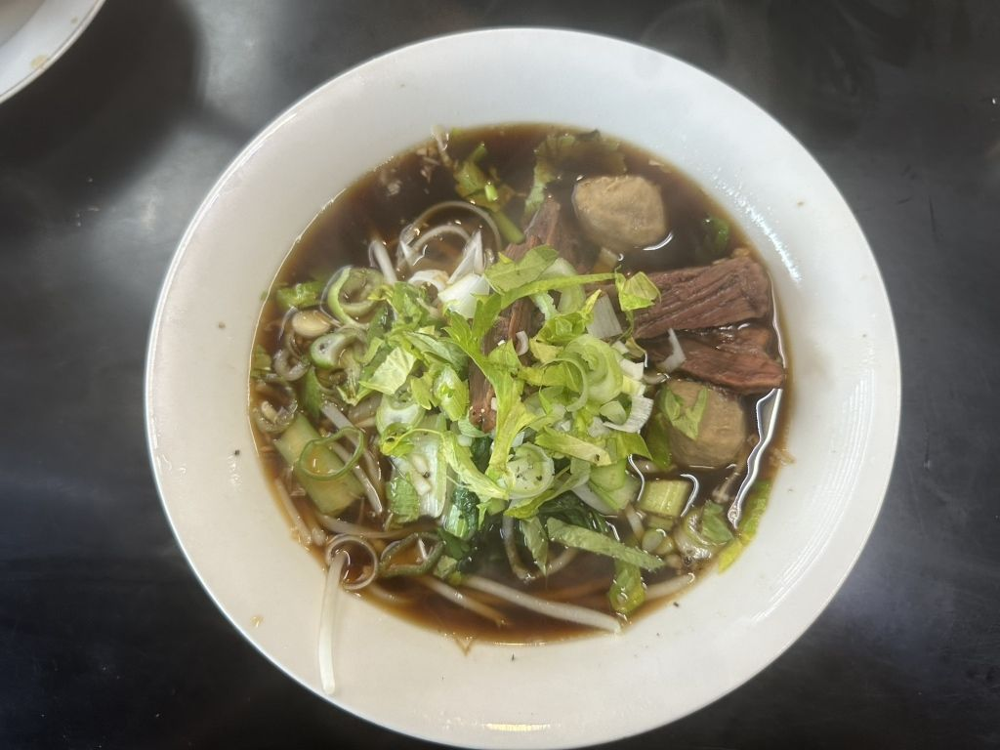
番号は店内に掲げているお品書きと同じものです。お値段は2026年6月時点のもので、そのほかのお品のお値段は店内のお品書きとお電話でご案内しております。
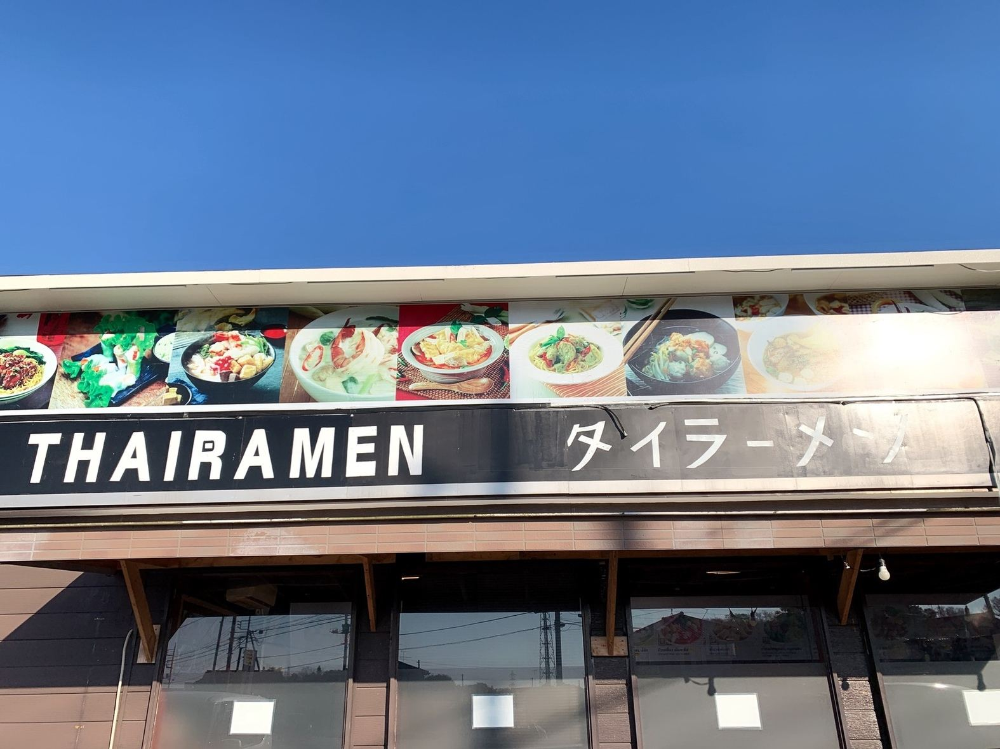
当店の料理は、タイの家庭で毎日つくられているものと同じ作り方でお出ししております。お品書きは一品ずつ写真と番号でご覧いただけますので、はじめてのお客様も、番号だけでご注文いただけます。
壁とお席のお品書きから、召し上がりたい一品をお選びください。写真の左上に番号を付けております。
番号をお伝えください。辛さはお好みに合わせてお作りいたします。パクチーを抜くこともできますので、お申し付けください。
お料理と一緒に、タイの調味料一式をお持ちいたします。使い方はご説明いたしますので、お好きな味に整えてお召し上がりください。
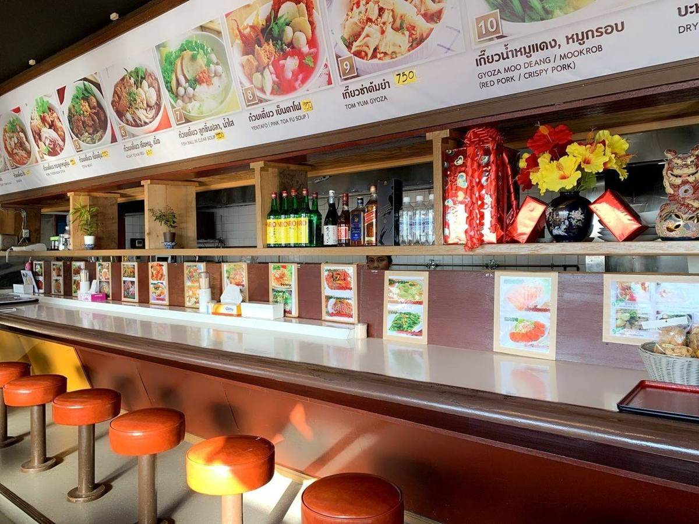
壁とカウンターに、お品書きを番号の順に掲げております。タイ語と英語の品名も添えておりますので、指さしでもお申し付けいただけます。
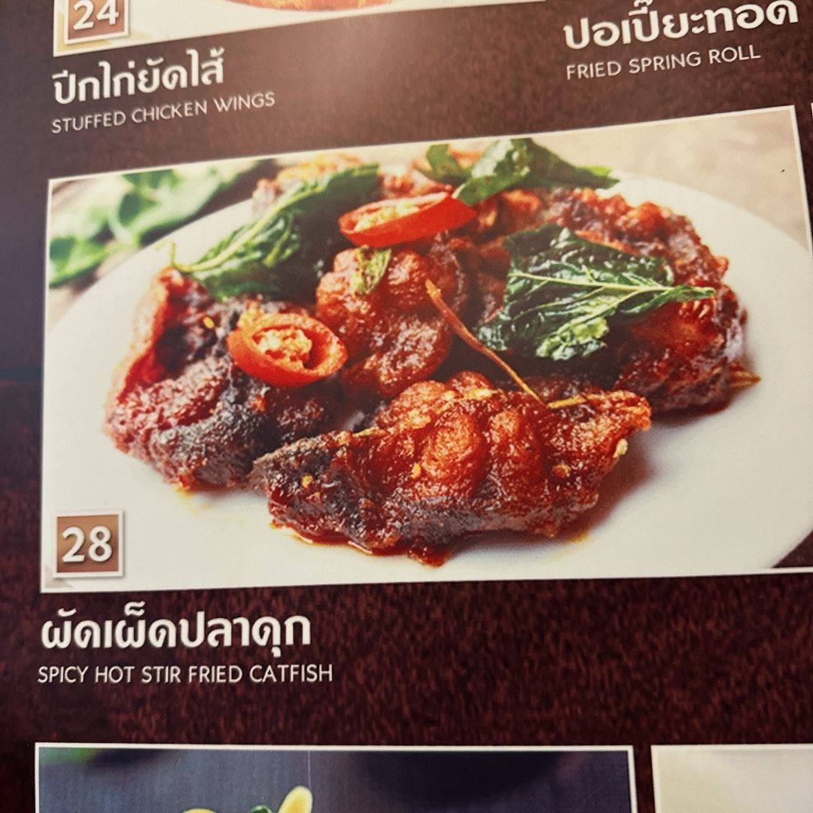
麺は米の細麺を中心に、ごはんもの、一品料理までご用意しております。
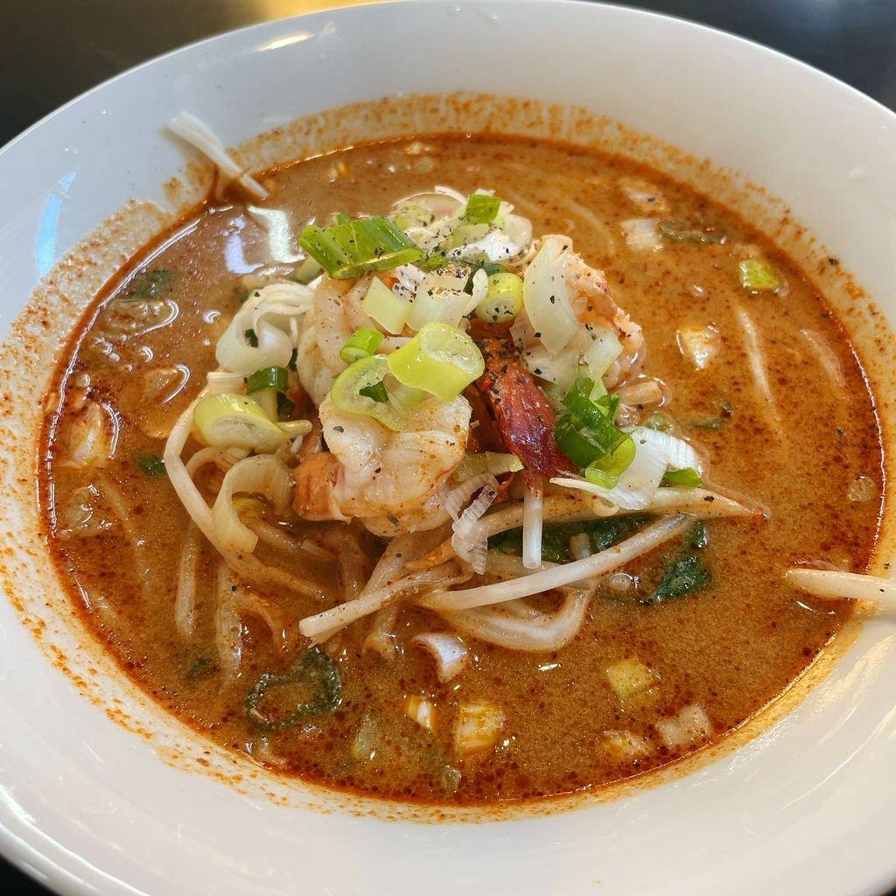
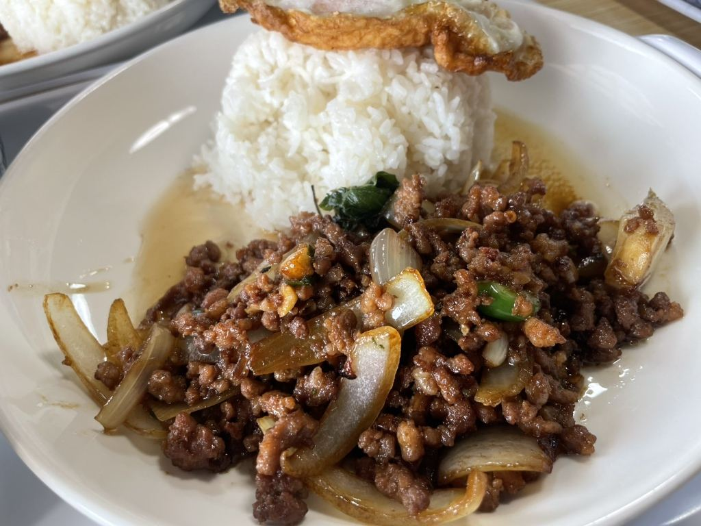
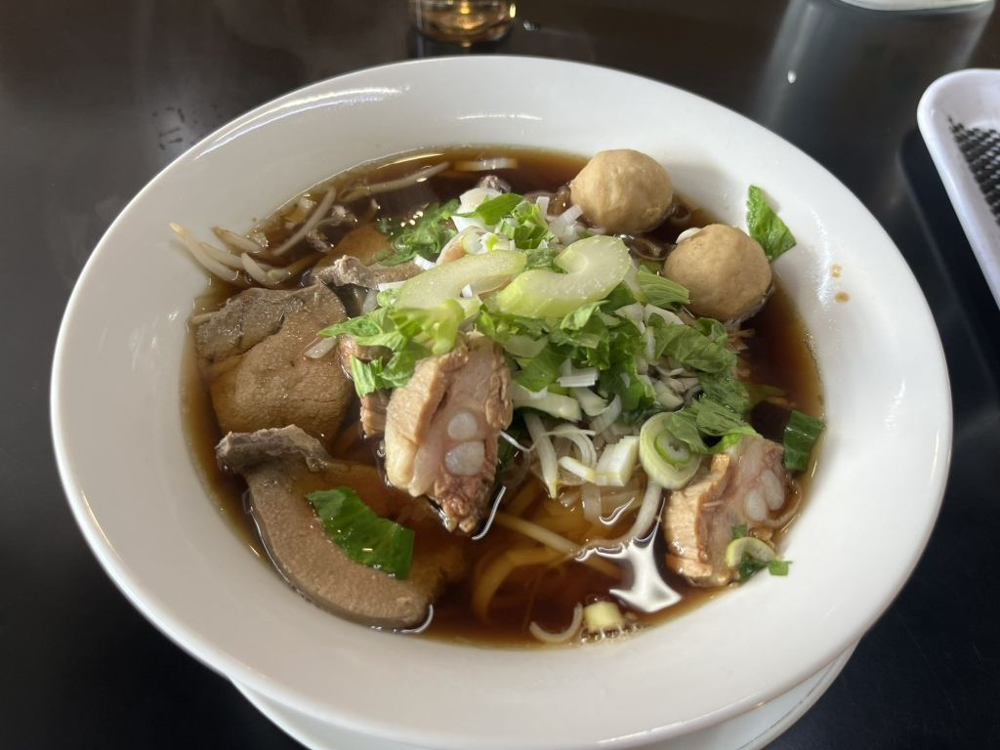
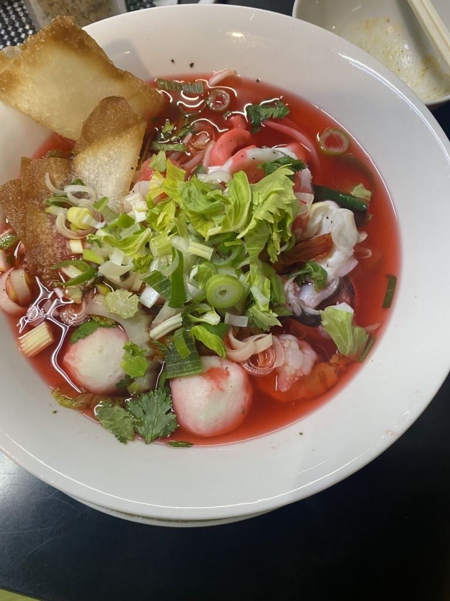
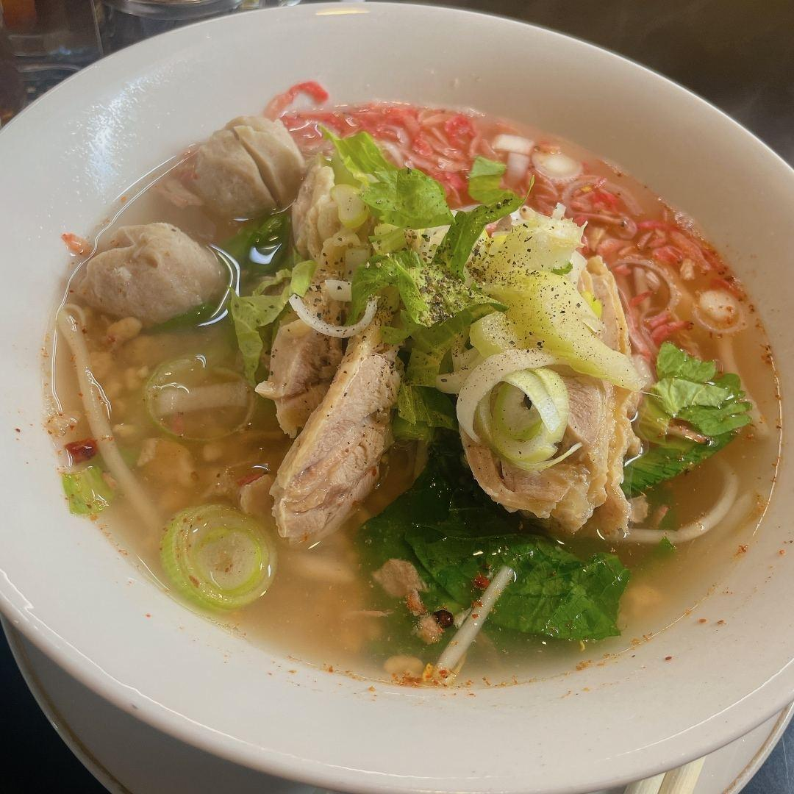
「タイでお馴染みの調味料セットも丁寧に説明してくださいました。本格的なトムヤムラーメンです。お腹も心も温まって大満足。」
お客様の声より
「スタッフさん達皆さんホスピタリティがあり、居心地良き。コーヒーやお茶がセルフで無料で飲めるのも良いですね。」
お客様の声より
「タイラーメンが食べた過ぎてここを見つけて、他も回ってやっぱりここはレベチだと思い始めて早2年ちょい。これからもここは通います。」
お客様の声より
カウンター席、テーブル席、お座敷をご用意しております。おひとりさまも、お子さま連れのお客様もどうぞ。
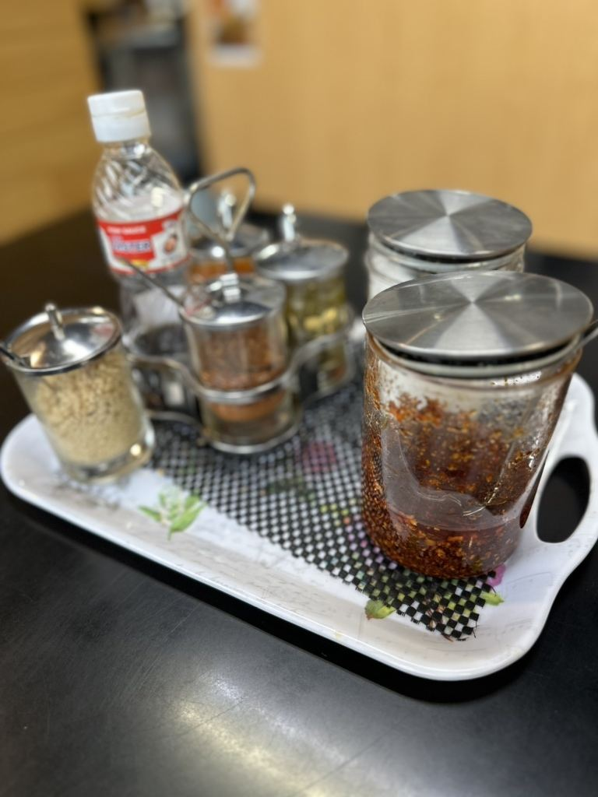
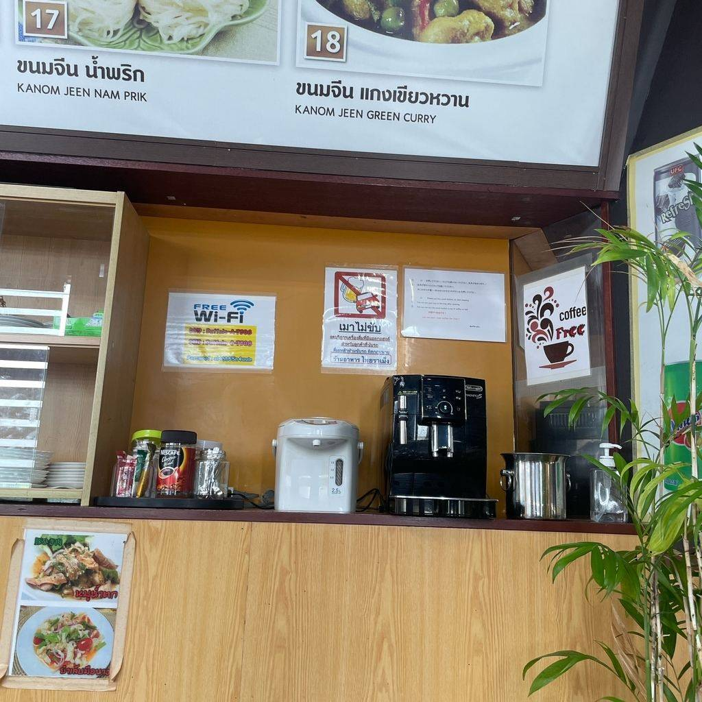
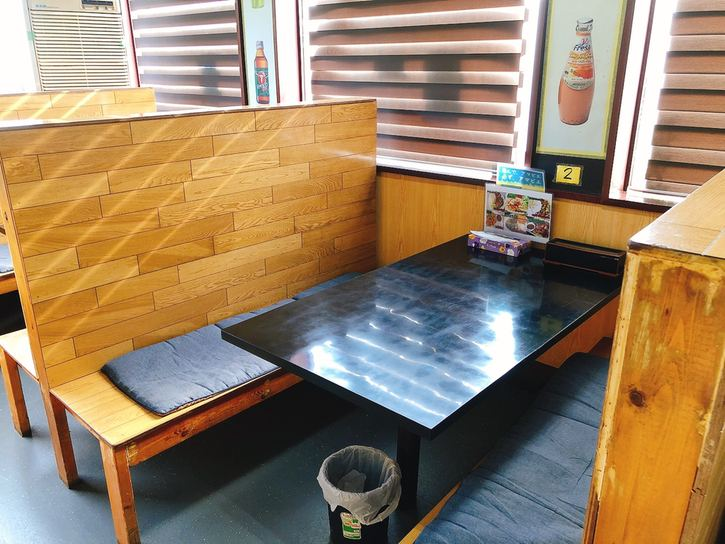
国道125号沿い、上大野交差点の近くです。お車でお越しのお客様は、店の前の駐車場をお使いください。
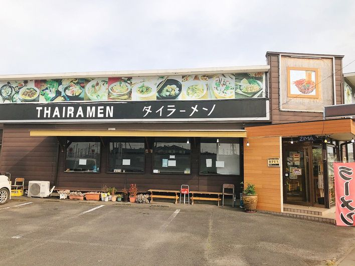
| 住所 | 〒306-0201 茨城県古河市上大野2213-15 |
|---|---|
| 電話 | 0280-23-1747 |
| 営業時間 | 11:00〜23:00（通し営業） |
| 定休日 | 不定休 |
| 席数 | 34席（カウンター10席・テーブル席・お座敷） |
| 駐車場 | 20台 |
| 無線LAN | ご利用いただけます |
| お支払い | 現金のみ承っております |
| ご予約 | ご予約は承っておりません。そのままお越しください |
営業時間は変更になることがございます。お出かけ前にお電話でお確かめいただけますと確かです。